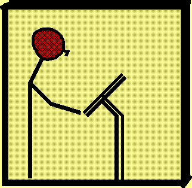
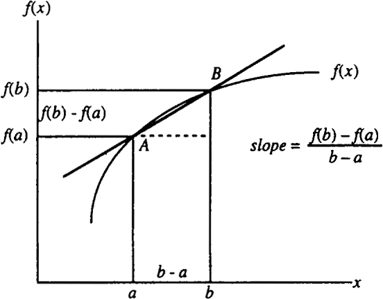
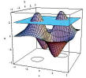
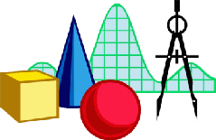

When \(a \ne 0\), there are two solutions to \(ax^2 + bx + c = 0\) and they are $$x = {-b \pm \sqrt{b^2-4ac} \over 2a}.$$
Fundamental Theorem of Calculus: \begin{align*} &\dfrac{d}{dx}\int f(t)dt=f(x)\\ &\int_a^b f(x)dx=F(b)-F(a) \end{align*}

| 
  |
| Class schedule by chapters/sections | |||||||||||||
|---|---|---|---|---|---|---|---|---|---|---|---|---|---|
| Functions, Graphs, and Models | Chapter R* Review R1-R5 | ||||||||||||
| Differentiation | 1.1-1.2 1.3-1.4 1.5-1.7* | ||||||||||||
| Application of Differentiation |
2.1 - 2.4;
2.5*-2.7* (max-min problems)
| Exam 1 | Chap.R*, 1-2
| Exponential and Logarithm Functions
| 3.1-3.2; 3.3*-3.5*
| Integration
| 4.1 - 4.7*
| Exam 2 | Chap.2* and Chap.3-4*
| Application of Integration | 5.1-5.3*
| Cumulative Final Exam | June 18, Thursday
| |
| Review | Exam | Date |
|---|---|---|
| Review Exam I | Exam I | |
| Review Exam II | Exam II | |
| Review Exam III | Reading Assignment* | |
| Review Final | Final Exam |